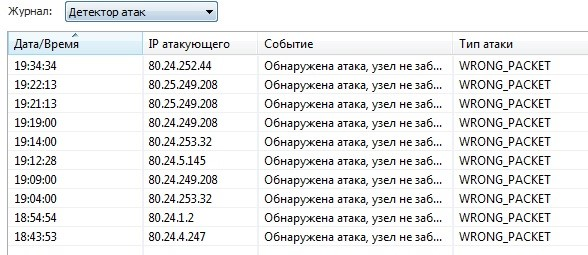

new packet connection: PROTO242/80.24.249.142:* → 222.163.0.0:* <n/a:0> [00000000/00005B19] 00000000
error: can’t find associated endpoint for connection [00004A5E/00004BDC]
это появляется в файрволе по времени по разному, бывает через 20 минут, бывает через три часа если работает гудбай, гудбай выключаешь, останавливается. Все на выход icmp я вырубил, их больше нет, но всё равно до конца так и не победил
Я тестировал и раньше, специально ничего не трогал и не открывал, проходит какое то время с включённым гудбаем и начинается вот это. С самого начала гудбая было всё ровно, но с годами стали появляться эти атаки, сначала значение этому не придал, а потом заметил что появляются только при включении гудбая. С каждым годом их больше и больше. Я выключал всё что могло полезть в нэт и так и не понял, они продолжают идти. Сертификаты, обновы, в общем всё я вырубил и всё равно появляется это. Самому файрволу я тоже доступ закрыл в нэт. Не могу понять куда смотреть
Может что то от майка осталось что я не усмотрел, но выключено всё что смог найти. Включал Wireshark ни одного пакета не пролетело я помню за целый день и прикол в том, что тяжело поймать, обычно это начинается ближе к ночи или только ночью.
И всегда эти адреса 80.24 я уже думал внести весь этот диапазон в чёрный список от греха, но может кто то это тоже просёк, поэтому и спрашиваю, в противном случаи придётся наверно банить )
Я только из за этого на роутер запрет не ставлю, так как не знаю что это, на компе хоть вижу, а на роуторе как это увидеть если начнётся что то подобное, а у меня сетка, не хочу чтоб она легла )
И этот вопрос интересует меня уже много лет и так и не решил
AI написал
Диапазон IP-адресов 80.24.0.0 - 80.24.255.255 относится к классу A и может использоваться для различных целей, включая предоставление интернет-услуг и доступ к ресурсам в сети. Эти адреса могут быть назначены как для публичных, так и для частных сетей, в зависимости от конфигурации сети и назначения.
В Windows 7 встроенные программы, которые могут использовать этот диапазон IP, включают:
Сетевые службы : такие как DHCP (Dynamic Host Configuration Protocol), который автоматически назначает IP-адреса устройствам в сети.
Службы удаленного доступа: например, VPN (Virtual Private Network), которые могут использовать эти адреса для подключения удаленных пользователей к корпоративной сети.
Файловые и принтерные службы : которые могут использовать IP-адреса для обмена данными между компьютерами в локальной сети.
Таким образом, диапазон IP 80.24.0.0 - 80.24.255.255 может быть использован различными сетевыми приложениями и службами в Windows 7 для обеспечения связи и доступа к ресурсам.
Вот DHCP я не помню, отключал не отключал, сегодня проверю
У вас наверно в файрволе включен детектор атак. Один из типов атак - фрагментация пакетов. А гудбайдпи как раз и фрагментирует/меняет пакеты (либо фейковые шлет). Может, из-за этого? Что вас вообще смущает? Что-то не работает?
Всё работает, смущает что туда отсылается и какого хрена вообще что то туда шлётся.
И да детектор атак включён
Но раньше этого не было, вот что смущает, настройки все те же.
Раньше у меня гудбай вообще всегда был включён и всё было ровно, понятно что провайдер что то наваял со временем. Если бы проблема была в самом файрволе, то он сразу начал исполнять, а так бывает целый день ничего и вечером начинается
Заблокируйте по ip весь диапазон адресов, раз смущает, делов-то. Лишь бы после этого ничего не отвалилось)
Заблокировать слишком просто, хочу до истины докопаться, столько лет мучает этот вопрос, не могу на него забить дуло, хочу понять что за фигня )
Адреса испанского провайдера Telefónica (AS3352). Что там конкретно Ваш файрволл показывает, не вполне понятно, но, похоже, используется некорректный номер IP протокола (242 - это unassigned), и файрволл совершенно логично считает такие пакеты невалидными.
А зачем кто-то из Испании в Вас такими пакетами кидается и как это связано с GDPI - это уже другой вопрос, тут ответа у меня нет.
Вот и я о том же.
Отключил вчера DHCP на компе и роуторе, пока всё прошло тихо на одном провайдере, проверю сегодня на другом. Это неделю надо тестировать. Не всегда такое происходит, бывает сразу, а бывает за целый день ничего.Давно хотел на роуторе отключить DHCP, так как не раз поднимался вопрос по безопасности и уязвимости DHCP и решить эту проблему никто так и не решил до сих пор, просто закрывают на неё глаза, типа работает, та и пофиг
Выглядит, как будто трафик ходит через вас из Испании в Китай. Может после включения гудбая, у вас разблокируется какой-то доступ, что-то типа ТОР, и вы начинаете пропускать через себя трафик. Проанализируйте софт, который у вас стоит. Попробуйте в диспетчере задач посмотреть сетевые соединения, или дамп трафика собрать.
Та ничего такого не установлено, пока что всё нормально на данный момент за сегодня, ни одной атаки не зафиксировано, в логах пробил, этого ip нету пока что. Отключил DHCP и в роуторе тоже, не знаю прокатит или нет.
Оно как обычно, когда хочешь поймать, тишина, когда не ждёшь, начинается. Не один год с этим борюсь. Но DHCP в роуторе я вроде точно не пробовал отключать именно для этой проверки. В винде всё отключено и удалено лишнее. Просто я наверно один кто пользуется этим файрволом, поэтому и замечаю, то что не видят другие, его сняли с производства сразу перед выходом десятки, изначальная его задача заключалась защитить пользователя, не раз он меня выручал и продолжает выручать дальше, если бы не он, так бы жил в неведении
Нет, не один) У меня кстати такие атаки были при посещении известных торрент-трекеров. И тоже при работающем обходе с windivert. Пришлось эти трекеры в исключения детектора атак добавить. Иначе через 5 мин доступ блокируется.
Хоть кто то ещё пользуется, я думал что один остался )
Вчера снова повторились в 22:38, в основном только вечером или ночью из процессов был только Firefox и гудбай в эту секунду. Я думаю что косяк возможно в windivert, может действительно нужно его обновить. Я подкидывал свежую версию WinDivert.dll работает если заменить, но если заменить WinDivert64.sys тогда гудбай запускается, но не обходит блокировки.
Насчёт атак по торрентам, причина в последних обновах 7 винды, добавили в обновы какой то шпионский модуль и он мониторит все соединения. Если вы настроите файрвол так как я, то у вас перестанет работать нэт, все соединения будут заблокированы. У меня нет этих обнов и при жестких настройках ни одной атаки с любого торрента. Эти самые жесткие обновы появились сразу перед выходом десятки, я долго боролся, но всё же победил, они не должны быть установлены изначально.
Спасибо за совет! Может, когда-нибудь воспользуюсь. Но пока без этих обнов никак, по работе нужен был доступ к удаленному серваку по ssh, через спец. утилиту. Потребовалось какие-то накопительные обновления поставить, чтоб заработало.
Я подозреваю что косячит файл WinDivert64.sys, так как в нём заложены сайты сертификатов, по типу ocsp.usertrust.com или secure.comodo.com или crl.comodoca.com и подобные, то есть этот файл пытается проверять сертификаты и происходит какой то сбой и начинается флуд.
Нельзя ли удалить из него эти адреса ? Или подскажите через какой софт можно удалить их самостоятельно или прописав например в место них ip 0.0.0.0, чтоб этот файл там никуда ничего не отправлял, мне не надо чтоб он проверял сертификаты.
Сам браузер их проверяет, а тут ещё файл WinDivert64.sys проверяет их дополнительно
Или эти адреса добавлены в WinDivert64.sys как исключения, ну чтоб драйвер на них не реагировал, знает может кто нить ?
подсеть 80.24.0.0/16 забанил и всё равно атака с этого диапазона  мистика
мистика
у меня в бане были эти адреса
ocsp1.wosign.com
ocsp.trust-provider.com
ocsp.usertrust.com
crl.trust-provider.com
crls1.wosign.com
они отвечают за проверку сертификатов, я их добавил ещё лет 15 тому назад если не больше, не знаю, проверю, может из этого был такой косяк, на тот момент я пользовался Internet Explorer и что то мне не понравилось, слишком много подключений было к этим адресам, только браузер открыл и сразу он туда лезет, ну и решил видать их забанить  не знаю поможет или нет. В мозиле можно отключить - Запрашивать у OCSP-серверов подтверждение текущего статуса сертификатов что я и сделал, не люблю просто эти лишние соединения, то есть OCSP-сервера знают все ваши подключения, а это нарушает конфиденциальность, хоть они и говорят что типа ничего не сохраняют, но им не верю
не знаю поможет или нет. В мозиле можно отключить - Запрашивать у OCSP-серверов подтверждение текущего статуса сертификатов что я и сделал, не люблю просто эти лишние соединения, то есть OCSP-сервера знают все ваши подключения, а это нарушает конфиденциальность, хоть они и говорят что типа ничего не сохраняют, но им не верю  на их месте я бы так и рассказывал, типа та не, мы ничего, пользуйтесь смело, всё нормально, всё бесплатно, мы думаем о вашей безопасности )))
на их месте я бы так и рассказывал, типа та не, мы ничего, пользуйтесь смело, всё нормально, всё бесплатно, мы думаем о вашей безопасности )))
В общем как я понял. Какой то сайт или соединение палит неправильный пакет при включённом гудбай и отправляет запрос в контору на проверку которая мониторит весь трафик в нэте и эта контора пытается проверить что за фигня происходит используя у меня открытый или полуоткрытый порт, пустить трафик через него, проверить где косяк на пути, используя мой комп как шлюз, я не знаком с такими технологиями.
Думаю что так происходит у всех при включённом гудбай, вы просто этого не замечаете.
Я не знаю на что они ещё способны и какой ещё могут прислать пакет, но у меня всё отключёно и просто так потушить мой комп не смогут, поэтому я сильно не переживаю, но всё равно привлекаю внимание, поэтому стараюсь гудбаем не злоупотреблять, включаю только когда действительно надо.
Победить не могу, потому что получается стучит какой то домен или ip, может какой то шлюз через который проходит трафик, а те реагируют начинают проверять и судя по их ip, можно понять где они находятся, что за контора, история умалчивает